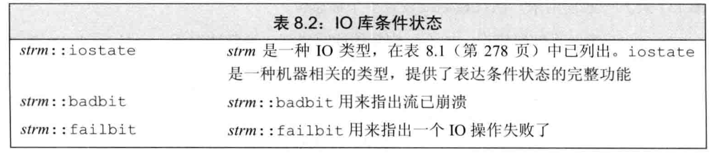
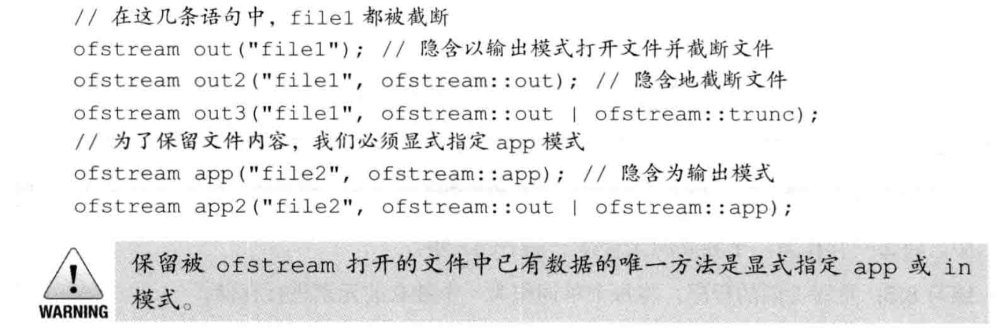
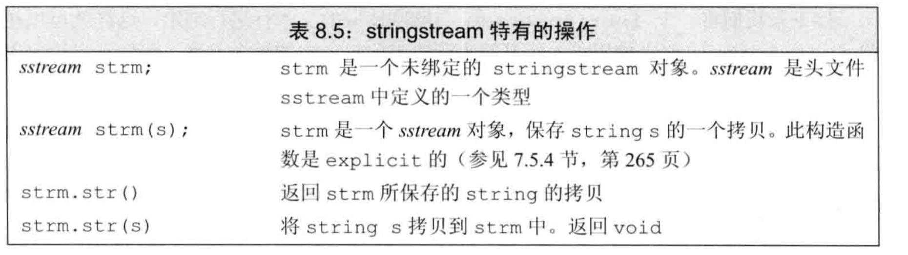
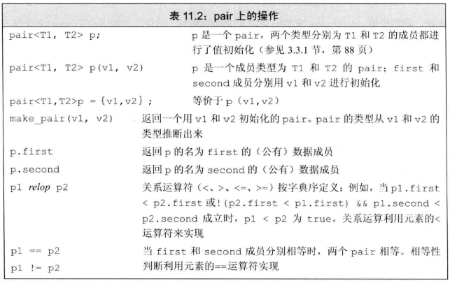

8.IO库
IO类
IO库类型和头文件
| 头文件 | 类型 |
|---|---|
| iostream | istream,wistream从流读取数据 |
| ostream,wostream向流写入数据 | |
| iostream，wiostream读写流 | |
| fstream | ifstream,wiftream从文件读取数据 |
| ofstream,wofstream向文件写入数据 | |
| fstream，wfstream读写文件 | |
| sstream | istringstream,wistringstream从string读取数据 |
| ostringstream,wostringstream向string写入数据 | |
| stringstream，wstringstream读写流 |
- 我们不能拷贝或者对IO对象赋值。
1 | ofstream out1,out2; |
流对象的rdstate成员返回一个iostate值，对应流的当前状态。setstate操作将给定条件位置位，表示发生了对应错误。


带参数的clear接受一个iostate值，表示流的新状态。为了复位单一的条件状态位，我们首先用rdstate读出当前条件状态，然后用位操作将所需位复位来生成新的状态。
1 | //复位failbit和badbit，保持其他标识位不变 |
在每个输出操作后，我们可以使用操作符unitbuf设置流的内部状态，来清空缓冲区。默认情况下，对cerr是设置unitbuf的，因此写到cerr的内容都是立即刷新的。
刷新输出缓冲区
操作符endl完成换行并刷新缓冲区的工作。
操作符ends向缓冲区插入一个空字符，然后刷新缓冲区。
操作符flush刷新缓冲区，不输出任何额外的字符。
如果想在每次输出操作后都刷新缓冲区，可以使用unitbuf操作符。他告诉流在接下来的每次写操作后都进行一次flush操作。而nounitbuf操作符则重置流，使其恢复使用正常的系统管理的缓冲区刷新机制：
1 | cout << unitbuf; //所有输出操作后都会立即刷新缓冲区 |
关联输入和输出流
当一个输入流被关联到一个输出流时，任何试图从输入流读取数据的操作都会先刷新关联的输出流。
1
cin.tie(&cout); //将cin和cout关联在一起（默认情况下这两者是关联的）
每个流同时最多关联到一个流，但多个流可以同时关联到同一个ostream
文件输入输出
使用文件流对象
创建文件流对象时，可以提供文件名。如果提供文件名，则open会被自动调用；
1
2ifstream in(ifile); //构造ifstream并打开给定文件
ofstream out; //输出文件流out当一个fstream对象离开其作用域，与之关联的文件会自动关闭。（当一个fstream对象被销毁时，close会被自动调用）
文件模式
- 只可以对ofstream或fstream设定out模式。
- 只可以对ifstream或fstream设定in模式。
- 只有当out也被设定，才可以设定trunct模式
- 只要trunc没被设定，就可以设定app模式。
- 
- 使用完流要及时close()
string流
sstream特有的操作

例子
1
2
3
4
5
6
7
8
9
10
11
12
13
14
15
16
17
18
19
20
21
22
23
24
25
26
27
28
29
30
31
32
33
34
35
36
37
38
39
int main(){
std::vector<PersonInfo> personInfos;
std::string line,data;
std::ifstream inputFile;
inputFile.open("/Users/xuexuan/Desktop/tmp/test/123");
while(std::getline(inputFile,line)){
PersonInfo person;
std::istringstream record(line);
record >> person.name;
while (record >> data){
person.phones.push_back(data);
}
personInfos.push_back(person);
}
for (const auto &item:personInfos){
std::ostringstream formatted, badNums;
for (const auto &nums:item.phones){
if(valid(nums)){
formatted << " "<<nums;
} else{
badNums << " "<<nums;
}
}
if (badNums.str().empty()){
std::cout << item.name <<" "<<formatted.str()<<std::endl;
} else{
std::cout << item.name <<" invalid:"<< badNums.str() <<std::endl;
}
}
}
9.顺序容器
顺序容器的类型
| 容器 | 特点 |
|---|---|
| vector | 可变大小数组。支持快速随机访问，在尾部之外的位置插入或删除元素可能很慢 |
| deque | 双端队列。支持快速随机访问。在头尾位置插入/删除速度很快 |
| list | 双向链表。只支持双向顺序访问。在list中任何位置进行插入/删除操作速度都很快 |
| forward_list | 单向链表。只支持单向顺序访问。在链表任何位置进行插入/删除操作都很快 |
| array | 固定大小数组。支持快速随机访问。不能添加或删除元素 |
| string | 与vector相似的容器，但专门用于保存字符。随机访问快。在尾部插入/删除速度快 |
vector\deque\list\forward_list\array\string
array是一种比内置数组更安全，更容易使用的数组类型。 array支持拷贝与赋值操作。
forward_list没有没有size操作。
选择容器的基本原则
- 除非有很好的理由选择其他容器，否则选择vector
- 如果你的程序有很多小的元素，且空间的额外开销很重要，则不要使用list或forward_list.
- 如果程序要求随机访问元素，应使用vector或deque
- 如果程序要求在容器中间插入或删除元素，应使用list或forward_list.
- 如果程序需要在头尾位置插入或删除元素，但不会在中间位置进行插入或删除操作，则使用deque。
- 如果程序只有在读取输入时才需要在容器中间位置插入元素，随后需要随机访问元素。则：
- 。。。
如果你不确定应该使用哪种容器，那么可以在程序中只使用vector和list公共的操作：迭代器，不使用下标操作，避免随机访问。这样，在必要时选择vector和list都很方便。
容器操作
- 新标准库中容器既提供成员版本的swap，也提供非成员版本的swap。统一使用非成员版本的swap是一个好习惯。
- 当不需要写访问时，应使用cbegin和cend
容器概述
容器定义与初始化
每个容器类型都定义了一个默认构造函数。除array之外，其他容器的默认构造函数都会创建一个指定类型的空容器，且都可以接受指定容器大小和元素初始值的参数。
1 | C c; |
为了创建一个容器为另一个容器的拷贝，两个容器的类型及其元素类型必须匹配。当传递迭代器参数来拷贝一个范围时，就不要求容器类型是相同的了。而且，新容器与原容器中的元素类型也可以不同，只要能将要拷贝的元素转换为要初始化的容器的元素即可。
虽然我们不能对内置数组类型进行拷贝或对象赋值操作，但array无此限制。
顺序容器操作
添加元素
访问元素
在解引用一个迭代器或调用front或back之前检查是否有元素
1 | if (!c.empty()){ |
顺序容器中访问元素的操作
删除元素
改变容器大小
- 改变容器大小 c .resize()
容器操作可能使迭代器失效
- 容器操作可能使迭代器失效，因此必须保证每次改变容器的操作之后都正确的重新定位迭代器。
- 管理容量的成员函数
| c.shrink_to_fit() | 将capacity()减小为与size()相同大小 |
| c.capacity() | 不重新分配内存的话，c可以保存多少元素 |
| c.reserve() | 分配至少能容纳n个元素的内存空间 |
容器适配器
stack/queue/priority_queue
栈默认基于deque实现。
额外的string操作
构造string的其他方法
1 | //n、len2和pos2都是无符号值 |
子字符串操作
1 | s.substr(pos,n); //返回一个string，包含s中从pos开始的n个字符的拷贝。pos的默认值为0.n的默认值为s.size()-pos,即拷贝从pos开始的所有字符 |
修改string的操作
string搜索操作
compare函数
数值转换
容器适配器
除了顺序容器，标准库还定义了三个顺序容器适配器：stack，queue和priority_queue。
10.范型算法
大多数算法定义在algorithm中。标准库还在numeric头文件中定义了一组数值范型算法。泛型算法本身不会执行容器的操作，他们只会运行于迭代器之上，执行迭代器的操作。算法永远不会改变底层容器的大小。算法可能改变容器中保存的元素的值，也可能在容器内移动元素，但永远不会直接添加或删除元素。
只读算法
累加算法
1 | int sum = accumulate(vec.cbegin(),vec.cend(),0) //accumulate中第三个参数的类型决定了函数中使用哪个加法运算符以及返回值的类型 |
对于只读取而不改变元素的算法，通常最好使用cbegin()和cend()
判等算法
1 | equal(roster1.cbegin(),roster1.cend(),roster2.cbegin()) |
那些只接收一个单一迭代器来表示第二个序列的算法都假定第二个序列至少和第一个序列一样长。确保算法不会试图访问第二个序列中不存在的元素是程序员的责任。
写容器元素的算法
1 | fill(vec.begin(),vec.end(),0); //将每个元素置0 |
向目的位置迭代器写入数据的算法假定目的位置足够大，能容纳要写入的元素
back_inserter 插入迭代器
back_inserter定义在头文件iterator中的一个函数。接受一个指向容器的引用，返回一个与该容器绑定的插入迭代器。当我们通过此迭代器赋值时，赋值运算符会调用push_back将一个具有给定值的元素添加到容器中。我们常使用back_inserter来创建一个迭代器，作为算法的目的位置来使用。
1 | vector<int> vec; //空向量 |
拷贝算法
1 | //copy |
重排元素的算法
1 | //sort |
定制操作
向算法传递函数
类似于sort之类的函数有第二个版本，接受第三个参数，此参数是一个谓词。
谓词是一个可调用的表达式。其返回结果是一个能用做条件的值。
1 | bool isShorter(const string &s1, const string &s2){ |
1 | //find_if函数 |
lambda表达式
find_if 函数
接受一对迭代器，查找范围内第一个满足特定条件的元素。
lambda表达式的形式[capture list](parameter list) -> return type {function body}
一个lambda只有在其捕获列表中捕获一个他所在函数中的局部变量，才能在函数中使用该变量
如果lambda的函数体包含任何单一return语句之外的内容，且未指定返回类型，则返回void
lambda捕获和返回
如果可能的话，应避免捕获指针或引用
隐式捕获：为了只是编译器推断捕获列表，应在捕获列表中写一个
&或=，&告诉编译器采用引用捕获的方式，=告诉编译器采用值捕获的方式1
find_if(words.begin(),words.end(),[=](const string &s){return s.size()>sz})
如果希望改变被捕获的变量，就必须在参数列表开头加上关键字mutable。
1
2
3
4
5
6void fcn3(){
size_t v1 = 42;
auto f = [v1]() mutable {return ++v1;};
v1 = 0;
auto j = f(); //j为43
}指定lambda的返回类型
1
2
3
4// transform
// 接受三个迭代器和一个可调用对象。前两个迭代器表示输入序列，第三个迭代器表示目的位置。对输入序列中的每个元素调用可调用对象，并将结果写入到目的位置。
// 返回绝对值
transform(v1.begin(),v1.end(),[](const int &v)->int{if v<0:return -v;else:return v;});
参数绑定
bind函数位于头文件functional中，绑定格式auto newCallable = bind(callable, arglist)。arglist中的参数可能包含形如_n之类的名字，表示占位符。_1表示newCallable的第一个参数
使用placeholders名字
名字_n都定义在placeholders命名空间中。这个空间本身定义在std命名空间中
using namespace std::placeholders;
1 | bool check_size(const string &s, string::size_type sz){ |
bind的哪些不是占位符的参数被拷贝到bind返回的可调用对象中。如果我们希望传递给bind一个对象而不拷贝它，就必须使用ref函数：
1 | for_each(words.begin(),words.end(),bind(print,ref(os),_1,' ')) |
其他迭代器
- 插入迭代器
- 流迭代器
- 反向迭代器
- 移动迭代器
插入迭代器
back_inserter、front_inserter、inserter
插入迭代器的工作方式
当调用inserter(c, iter) 时，得到一个迭代器，使用它时，会插入到iter原来所指的元素之前的位置
当调用front_inserter时，元素总是插入到第一个元素之前。
iostream迭代器
1 | //从标准输入中读取数据，存入一个vector中 |
可以通过copy打印vec中的元素，这比编写循环更简单。
1 | copy(vec.begin(),vec.end(),out_iter); |
反向迭代器
递增一个反向迭代器会移动到前一个位置，递减一个反向迭代器会移动到后一个位置。
泛型算法结构
| —– | —– |
|---|---|
| 输入迭代器 | 只读、不写；单遍扫描，只能递增 |
| 输出迭代器 | 只写、不读；单遍扫描，只能递增 |
| 前向迭代器 | 可读写；多遍扫描，只能递增 |
| 双向迭代器 | 可读写；多遍扫描，可递增递减 |
| 随机访问迭代器 | 可读写，多遍扫描，支持全部迭代器运算 |
array、deque、string和vector的迭代器都是随机访问迭代器，用于访问内置数组元素的指针也是。
算法形参模式
大多数算法具有如下四种形式之一：
1 | alg(beg,end,other args) |
接受单个目标迭代器的算法
算法假定：按需要写入数据，不管写入多少元素都是安全的
如果dest是一个直接指向容器的迭代器，那么算法将输出数据写到容器中已经存在的元素内。更常见的情况是，dest被绑定到一个插入迭代器，或是一个ostream_iterator。
接受第二个输入序列的算法
算法假定从beg2开始的范围与beg和end所表示的范围至少一样大。
算法命名规范
一些算法使用重载形式传递一个谓词 (unique)
_if版本的算法
接受一个元素值的算法通常有另一个不同名的版本，该版本接受一个谓词代替元素值。接受谓词的算法都有附加的_if前缀：
1 | find(beg,end,val); //查找输入范围中val第一次出现的位置 |
区分拷贝元素的版本和不拷贝元素的版本
写到额外空间的算法都在名字后面附加一个_copy:
1 | reverse(beg,end); |
特定容器算法
list和forward_list成员函数版本的算法
1 | lst.merge(lst2); 将来自lst2的元素合并入lst，lst2变为空。lst和lst2都必须是有序的，使用<运算符 |
11.关联容器
关联容器支持高效的关键字查找和访问。
两个主要的关联容器：set和map。
|容器类型|描述|
|————-|———|
|按关键字有序保存元素||
|map|关联数组：保存关键字-值对|
|set|关键字即值，即只保存关键字的容器|
|multimap|关键字可重复初夏你的map|
|multiset|关键字可重复出现的set|
|无序集合||
|unordered_map|用哈希函数组织的map|
|unordered_set|用哈希函数组织的set|
|unordered_multimap|哈希组织的map：关键字可重复出现|
|unordered_multiset|哈希组织的set：关键字可重复出现|
使用关联容器
使用map
1 | //统计每个单词出现的次数 |
使用set
1 | //统计每个单词出现的次数 |
关联容器概述
关联容器支持普通容器的所有操作。不支持顺序容器的位置相关操作（如push_back等）。
关联容器的定义
1 | map<string, size_t> word_count; //空容器 |
关键字类型的要求
关键字类型必须定义元素的比较方法
使用关键字类型的比较函数
1 | //当使用decltype来获得一个函数的指针时，必须加上一个*来指出我们要使用一个给定函数类型的指针 |
pair类型
pair类型定义在头文件utility中。
1 | pair<string,string> anon; |
pair的数据成员是public的，两个成员分别命名为first和second。

关联容器的操作
关联容器额外的类型别名
| —————— | —————— |
|---|---|
| key_type | |
| mapped_type | |
| value_type |

关联容器迭代器
1 | auto map_it = word_count.cbegin(); // *map_it是一个指向word_count中第一个元素的引用 |
- set类型中的元素是const的，map中的元素是pair，其第一个成员是const的。
- 由于关联容器中的元素不能通过他们的关键字进行快速查找，因此对其使用泛型算法是一个坏主意。使用关联容器定义的专用的find成员比泛型find快的多。
- 实际编程中，如果我们真要对一个关联容器使用算法，要么是将他作为一个源序列，要么是当作一个目的位置。
添加元素
1 | //set |
insert具有返回值。对于不包含重复关键字的容器，添加单一元素的insert和emplace返回一个pair,pair的第一个元素为指向具有给定关键字的元素的迭代器，second是一个指示关键字插入成功还是已经存在在容器中的bool值。
删除元素
1 | c.erase(k); //删除关键字为k的元素，返回size_t值，指出删除元素的数量 |
map的下标操作
不能对multimap和unordered_multimap进行下标操作。
与其他下标运算符不同的是，如果关键字不在map中，会为它创建一个元素并插入到map中，关联值将进行值初始化。
1 | c[k]; //返回关键字为k的元素；如果k不在map中，则进行值初始化 |
访问元素
1 | c.find(k); //返回一个迭代器，指向第一个关键字为k的元素。如果不存在，指向尾后迭代器。 |
无序容器
无序关联容器使用哈希函数。
无序容器在储存上组织为一个桶，每个桶保存零个或多个元素。无序容器使用哈希函数将元素映射到桶。
无序容器的管理操作
1 | //桶接口 |
12.动态内存
- 静态内存保存局部static对象、类static成员以及定义在任何函数之外的变量。分配在静态内存中的对象由编译器自动创建和销毁。
- 栈内存用来保存函数内的非static对象。
- 除了静态内存和栈内存，每个程序还拥有一个内存池。这部分内存被称作自由空间或堆。程序用堆来储存动态分配的对象。
动态内存与智能指针
智能指针定义在头文件memory中
shared_ptr允许多个指针指向同一个对象unique_ptr独占所指向的对象weak_ptr，是一种弱引用，指向shared_ptr所管理的对象
shared_ptr类
智能指针也是模板
1 | //shared_ptr和unique_ptr都支持的操作 |
make_shared函数
1 | shared_ptr<int> p3 = make_shared<int> (42); |
如果将shared_ptr保存在容器中，而后不再需要全部元素，而只要其中的一部分元素，要记得使用erase删除不再需要的那些元素。
程序使用动态内存的原因
- 程序不知道自己需要使用多少对象
- 程序不知道对象的准确类型
- 程序需要在多个对象间共享数据
直接管理内存
使用new动态分配和初始化
在自由空间分配的内存是无名的，因此new无法为其分配的对象命名，而是返回一个指向该对象的指针.
1 | int *pr = new int(1024); |
new和delete内存管理常见的三个问题
1.忘记delete内存
2.使用已经释放的对象
3.同一块内存使用两次
shared_ptr和new结合使用
1 | shared_ptr<int> p1 = new int(42); //错误：必须直接初始化 |
不要混合使用普通指针和智能指针，也不要使用get初始化另一个智能指针或为另一个智能指针赋值
其他shared_ptr操作
1 | p = new int(1024); //错误：不能将一个指针赋予shared_ptr |
智能指针使用规范
- 不使用相同的内置指针初始化（或reset）多个智能指针
- 不delete get()返回的指针
- 不使用get()初始化或reset另一个之智能指针
- 如果使用get()返回的指针，记住当最后一个对应的智能指针销毁后，指针就变为无效了。
- 如果使用智能指针管理的资源不是new分配的内存，记住传递给它一个删除器。
unique_ptr
初始化unique_ptr也必须采用值初始化
1 | unique_ptr<string> p1(new string("Stearklwjer")); |
可以拷贝或赋值一个将要销毁的unique_ptr，比如函数返回值。
weak_ptr
weak_ptr是一种不控制所指向对象生存期的智能指针，它指向一个由shared_ptr管理的对象。将一个weak_ptr绑定到一个shared_ptr不会改变shared_ptr的引用计数。一旦最后一个指向对象的shared_ptr被销毁，对象就会释放。
由于对象可能不存在，我们不能使用weak_ptr直接访问对象，必须调用lock()。
if (shared_ptr<int> np = wp.lock()){}
动态数组
当一个应用需要可变数量的对象时，使用vector。
new和数组
1 | int *pia = new int[get_size()]; //pia指向第一个int |
注意：动态数组类型并不是数组类型
allocator类
allocator提供一种内存感知的内存分配方法。